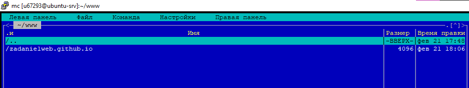

- Для выполнения первого задания нам необходимо зайти в программу PuTTY
- Затем мы подключаемся к серверу "kubsu-dev.ru" через порт 22
- Нам необходимо ввести логин и пароль от сервера
- В первом пункте нам необходимо с помощью команды ping на учебном сервере узнать IP-адрес веб-сервера kubsu.ru. Ping – утилита командной строки, которая нужна для проверки подключения к другому компьютеру на уровне IP.
Для завершения работы данной команды надо применить сочетание клавиш Cntr+C

- Проверяем команду ping для сайта kubsu-dev.ru.
- Во втором пункте нам необходимо с помощью команды nslookup на учебном сервере узнать A-записи и MX-записиkubsu.ru.A-запись домена — это сопоставление доменного имени IP-адресу ресурса. Утилита nslookup используется для запросов в систему доменных имён (DNS) с целью выявления имён или IP-адресов, а также других специфических DNS-записей.Запись MX — тип DNS-записи, предназначенный для маршрутизации электронной почты с использованием протокола SMTP. В каждой MX-записи для конкретного доменного имени хранятся два поля: Имя почтового сервера, обслуживающего домен. Порядковый номер предпочтения этого сервера — используется в случаях, когда доменное имя обслуживается несколькими почтовыми серверами. Механизм записей MX предоставляет возможность использовать множество серверов для одного домена и упорядочивания их использования в целях уменьшения нагрузки и увеличения вероятности успешной доставки почты.
- В данном пункте применяется команда nslookup -type=mx для получения данных о почтовых адресах kubsu.ru.
- Я решила применить команду nslookup -type=any для получения полной информации о DNS-записях сайта kubsu.ru.
- Повторяем команду nslookup -type=mx для получения данных о почтовых адресах kubsu-dev.ru.
- А также nslookup -type=any для получения полной информации о DNS-записях сайта kubsu-dev.ru.
- В третьем пункте с помощью команды whois узнать дату регистрации домена kubsu.ru.WHOIS — это служба, предоставляемая InterNIC, которая предоставляет сведения о доменах второго уровня, включая адреса электронной почты контактов, почтовые адреса и телефонные номера пользователей, зарегистрированных в InterNIC. WHOIS также может помочь определить, используется ли уже доменное имя, которое может быть полезно для новых администраторов сайта.

- Повторяем команду whois для получения полной информации о домене kubsu-dev.ru.
- Далее нам необходимо с помощью SSH склонировать репозитарий со скриншотами и страницей в каталог www. Для начала нам надо при помощи команды ssh-keygen сгенерировать публичный и приватный ключ.
- У нас появилось два ключа, для продолжения выполнения задания надо скопировать публичный ключ и вставить его в GitHub, для этого через команду mc мы заходим в меню сервера, где хранятся все файлы пользователей, пример открытия данной команды представлен ниже
- Затем нам необходимо перейти в каталог /.ssh, там мы увидим созданные нами ключи, нам нужен ключ с названием id_rsa.pub
- Нам нужно скопировать данный ключ, для этого я использовала программу WinSCP
- При запуске программы нас просят присоединиться к серверу, мы будем подключаться к серверу kubsu-dev.ru, используя наш логин и пароль.
- После входа в систему перед нами открывается экран, где слева у нас локальный компьютер, а справа сервер
- Здесь мы можем скопировать наш публичный ключ, открыв его при помощи программы Блокнот и копируем при помощи сочетания клавиш Cntr+A, Cntr+C
- После того как мы скопировали ключ, нам надо зайти на сайт GitHub и открыть настройки профиля
- Далее мы заходим в раздел SSH and GPG keys и нажимаем на кнопку New SSH key(указывает стрелка)
- Затем вставляем наш ключ в появившемся окне при помощи сочетания клавиш Cntr+V
- Мы успешно присоединили ключ нашего сервера к GitHub. После этого мы переходим в ранее созданный репозиторий нашего задания, в котором уже хранятся скрины выполнения первых пунктов.
- Здесь мы нажимаем на кнопку "<> Code" и выбираем раздел SSH, где хранится ключ-ссылка нашего репозитория, её мы и копируем.
- После этого мы возвращаемся в программу PuTTY и применяем команду cd www, чтобы открыть каталог www, в который мы будем клонировать наш репозиторий.
- После того как мы зашли в каталог нам необходимо использовать команду git clone, которая будет отвечать за клонирование репозитория и правой кнопкой мыши вставить ключ-ссылку самого репозитория.
- Нас можно поздравить! Мы соединили наш репозиторий с сервером!
- Далее по заданию нам нужно, используя программу WinSCP SFTP соединиться с учебным сервером по протоколу SFTP и скопировать на локальный компьютер файлы задания из каталога www. Так как мы уже ранее зашли в программу сейчас нам необходимо в каталоге www при помощи правой кнопки мыши кликнуть по нашей папке с репозиторием и выбрать пункт Перенести
- Далее мы выбираем куда именно нам надо перенести папку на локальный компьютер
- Перенос папки завершен
- Теперь так как мы добавили новые скрины с переносом, нам необходимо на сервере перезаписать наш репозиторий, то есть мы открываем меню (команда mc) и заходим в каталог www, где хранится наш репозиторий. 
- Далее выбираем нашу папку и при помощи команды снизу под номером 8 "Удалить", удаляем наш репозиторий
- После этого заново копируем ключ-ссылку нашего репозитория и повторяем действия, прописанные выше с командой git clone
- Всё готово! И наш сайт действителен по ссылке
http://u67293.kubsu-dev.ru/zadanie1web.github.io/
Скриншоты выполнения 1 задания по дисциплине "WEB-backend"


При использовании данной команды мы получаем IP-адреса и скорость, с которой сервер соединится с другим сервером